11 Memory Management and Garbage Collection
Every programming language must confront a fundamental question: how is memory allocated, used, and reclaimed? In languages like C, programmers manually manage heap memory with malloc and free. In languages like OCaml, Java, and Ruby, this burden is lifted through automatic memory management, also called garbage collection.
This lecture examines how memory is classified, why automatic reclamation is desirable, and the major algorithms used to identify and reclaim unreachable objects.
11.1 Memory Attributes
Memory used to store data in a program has a lifecycle with three stages:
Allocation — when the memory is allocated to the program
Lifetime — how long the allocated memory is used by the program
Recovery — when the system recovers the memory for reuse
The system component that performs allocation and recovery is called the allocator.
Most programming languages are concerned with three memory classes:
Static (fixed) memory
Stack (LIFO) memory
Dynamically allocated (heap) memory
11.2 Memory Classes
11.2.1 Static Memory
Static memory resides at a fixed location for the entire duration of program execution.
Lifetime — lasts for the entire program execution
Allocation — occurs once, before or at program start
Allocator — handled by the compiler
Recovery — automatically reclaimed when the program terminates
11.2.2 Stack (LIFO) Memory
Stack memory operates in a last-in, first-out (LIFO) manner and is closely tied to function or method calls.
Lifetime — limited to the duration of a function/method invocation
Allocation — occurs when a function is called
Allocator — usually managed by the compiler (sometimes influenced by the programmer)
Recovery — automatically occurs when the function returns
Local variables
Function parameters
Return addresses
11.2.3 Dynamic (Heap) Memory
Dynamic memory is allocated at runtime from a region called the heap.
Lifetime — persists as long as the program needs it
Allocation — performed explicitly by the programmer or implicitly by the runtime/compiler
Allocator — manages available space within the heap
- Recovery — handled either:
Manually (e.g., free in C)
Automatically via garbage collection
11.3 Manual vs. Automatic Recovery
There are two main approaches to reclaiming heap memory, each with clear advantages and tradeoffs.
11.3.1 Manual Memory Management
In manual memory management, the programmer is responsible for explicitly allocating and freeing memory.
Efficient — minimal overhead, uses memory more tightly
- Error-prone — easy to introduce bugs such as:
Memory leaks (forgetting to free memory)
Dangling pointers (using memory after it’s freed)
Example (C):
#include <stdlib.h>
int main() {
int *p = (int*) malloc(sizeof(int)); // allocate memory
*p = 10;
// forgot to free(p); → memory leak
return 0;
}Use-after-free example (dangerous):
free(p);
*p = 20; //undefined behavior (dangling pointer)These mistakes can lead to crashes or serious security vulnerabilities.
11.3.2 Automatic Memory Management (Garbage Collection)
In automatic memory management, the system/runtime handles memory reclamation.
Less efficient — adds overhead (extra memory + occasional pauses)
Easier and safer — no need to track when objects should be freed
Avoids common bugs like leaks and dangling pointers
Example (Java):
public class Main {
public static void main(String[] args) {
String s = new String("hello"); // allocated on heap
s = null; // object becomes unreachable
// garbage collector will reclaim it automatically
}
}Example (Python):
def func():
x = [1, 2, 3] # allocated
return
func()
# x is no longer reachable → automatically cleaned upIn modern software, automatic memory management is preferred for most applications, especially where safety and developer productivity matter.
11.4 Memory Management in Practice
11.4.1 Memory Management in C
In C, local variables live on the stack:
Allocated at function invocation time
Deallocated when the function returns
Storage space is reused after the function returns
Space on the heap is allocated with malloc() and must be explicitly freed with free(). This is called explicit or manual memory management — deletions must be performed by the programmer.
11.4.2 Memory Management in Java
In Java, local variables also live on the stack, and storage is reclaimed when a method returns. However, objects live on the heap:
Created with calls to Class.new (or equivalent)
Objects are never explicitly freed — the runtime uses automatic memory management (garbage collection)
11.4.3 Memory Management in OCaml
In OCaml, local variables live on the stack, but tuples, closures, and constructed types live on the heap:
let x = (3, 4) (* heap-allocated *)
let f x y = x + y in f 3 (* result heap-allocated *)
type 'a t = None | Some of 'a
None (* not on the heap — just a primitive *)
Some 37 (* heap-allocated *)Data on the OCaml heap is reclaimed via garbage collection automatically.
11.5 Automatic Memory Management
The primary goal of automatic memory management is to automatically reclaim dynamic memory. A secondary goal is to avoid fragmentation — the situation where free memory is scattered in small, non-contiguous pieces throughout the heap.
The key insight is: if you can identify every pointer in a program, you can both reclaim dead memory and compact the live data to avoid fragmentation. Compaction works by moving allocated objects and redirecting all pointers to their new locations.
Languages like LISP, OCaml, Java, and Prolog give the compiler perfect knowledge of which values are pointers. Languages like C, C++, Pascal, and Ada do not, making this approach difficult or impossible.
11.5.1 Fragmentation
Fragmentation is a serious problem independent of GC. It happens when free memory exists, but it is split into small pieces that are not usable for a single allocation. This is especially important in heap allocation systems without compaction.
Let’s walk through this example step by step. Assume we start with a contiguous memory block:
Memory (start → end)
+----+----+----+----+----+
| | | | | |
+----+----+----+----+----+We allocate:
allocate(a); allocate(x); allocate(y);Result:
+----+----+----+----+----+
| a | x | y | | |
+----+----+----+----+----+Now we free a:
free(a);+----+----+----+----+----+
| | x | y | | |
+----+----+----+----+----+Now we free x:
free(x);+----+----+----+----+----+
| | | y | | |
+----+----+----+----+----+At this point, memory is fragmented: there are two free spaces, but they are separated. Now we try to allocate b, which needs 3 contiguous blocks:
allocate(b); (* fails *)11.5.2 Defragmentation
Defragmentation is the process of reorganizing memory so that free space becomes contiguous again, instead of being split into small scattered holes. It moves allocated blocks together and merges free space into one large block.
Before defragmentation
+----+----+----+----+----+----+
| a | | x | | y | |
+----+----+----+----+----+----+Defragmentation shifts live objects together:
After defragmentation (compaction)
+----+----+----+----+----+----+
| a | x | y | | | |
+----+----+----+----+----+----+11.6 GC Strategy: Live vs. Dead Objects
At any point during execution, the objects in the heap can be divided into two classes:
Live objects will be used later
Dead objects will never be used again — they are "garbage"
We need garbage collection (GC) algorithms that can:
Distinguish live from dead objects
Reclaim the dead objects and retain the live ones
11.6.1 Determining Liveness
In most languages, we cannot know for certain which objects are truly live or dead at runtime. This is undecidable — analogous to solving the halting problem.
Therefore, GC must make a safe approximation:
It is safe to decide something is live when it is not (conservative overapproximation)
It is not safe to deallocate an object that will be used later
11.6.2 Liveness by Reachability
The standard safe approximation is reachability. An object is reachable if it can be accessed by following ("chasing") pointers from live data.
The safe policy is: delete unreachable objects.
An unreachable object can never be accessed again by the program — it is definitely garbage
A reachable object may be accessed in the future — it could be garbage but will be retained anyway, which can lead to memory leaks
11.6.2.1 Roots
Liveness is defined as data reachable from the root set:
Global variables — static fields, module-level bindings (e.g., in Java, Ruby, OCaml)
Local variables of all live method activations — i.e., the stack
At the machine level, also the register set, which typically stores local or global variables
The goal of every GC algorithm is to trace reachability starting from these roots.
11.7 Reference Counting
The first major approach to GC is reference counting, invented by Collins in 1960 ("A method for overlapping and erasure of lists," Communications of the ACM, December 1960).
Idea: Each object maintains a count of the number of pointers to it from roots or other objects. When the count reaches 0, the object is unreachable and can be reclaimed.
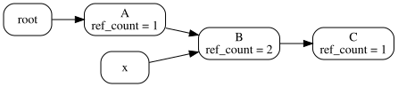
If we remove external references:
root = null
x = nullThen:
A becomes 0 → freed
B becomes 0 → freed
C becomes 0 → freedEverything is correctly reclaimed. Count tracking can be manual or automatic.
11.7.1 Step-by-Step Walkthrough
Step 1: Initial Allocation (root → A)
A single object A is allocated. The variable root points to A.
Reference counts:
A = 1 (from root)Only one object exists, and it is reachable.
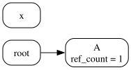
Step 2: Allocating B (A → B)
A new object B is created. A now holds a reference to B. The object graph starts to grow.
Reference counts:
A = 1 (from root)
B = 1 (from A)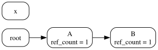
Step 3: Shared Reference (x → B)
A new variable x is introduced that also points to B, demonstrating shared ownership — multiple references to the same object.
Reference counts:
B = 2 (from A and x)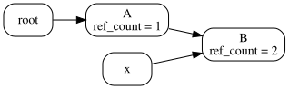
Step 4 — Allocating C (B → C)
A new object C is allocated. B points to C. We now have the chain root → A → B → C, plus x → B.
Reference counts:
C = 1 (from B)Step 5 — Removing root (A becomes unreachable)
root is set to null. A loses its only incoming reference:
A’s count drops to 0 → freed immediately
B retains 1 reference (from x) — not freed
C retains 1 reference (from B) — not freed
Freeing A does not free B because B is still referenced by x.
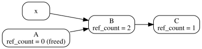
Step 6 — Removing x (B loses its external reference)
x is set to null. B loses one incoming reference.
B’s count drops from 1 to 0 → freed
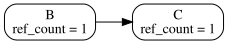
Step 7 — Cascade Deletion (B → C freed)
When B’s reference count drops to 0 and B is freed, its outgoing reference to C is removed as well.
B is freed
B’s reference to C is released
C’s count drops to 0 → freed
This triggers a cascade: freeing one object automatically frees all objects reachable only through it.
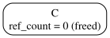
11.7.2 Where Reference Counting Is Used
C++ and Rust (smart pointers like Rc<T> and Arc<T>)
Cocoa/Objective-C (manual reference counting)
Python (automatic reference counting)
11.7.3 Rust Rc Example
Rust’s Rc<T> type provides reference-counted shared ownership:
use std::rc::Rc;
fn main() {
let s = String::from("hello");
let r1 = Rc::new(&s);
{
let r2 = Rc::clone(&r1);
println!("r1 = {}", Rc::strong_count(&r1)); // r1 = 2
println!("r2 = {}", Rc::strong_count(&r2)); // r2 = 2
}
// r2 is out of scope
println!("r1 = {}", Rc::strong_count(&r1)); // r1 = 1
}When r2 goes out of scope, its reference is dropped and the count decrements to 1. When r1 goes out of scope, the count reaches 0 and the allocation is freed.
11.7.4 Reference Counting Tradeoffs
Advantages:
Incremental technique — generally a small, constant amount of work per memory write; with more effort, running time can even be bounded
Immediate reclamation — objects are freed as soon as their count drops to 0
Disadvantages:
Cascading decrements can be expensive — freeing one object may trigger a chain of reference count decrements
Requires extra storage for reference counts
Cannot collect cycles — if a set of objects form a cycle, their counts never reach 0 even when they are unreachable from the roots; a separate cycle-detection mechanism is needed
11.8 Tracing Garbage Collection
The second major approach is tracing GC. Rather than maintaining counts incrementally, tracing GC determines reachability on demand.
Idea: Every so often, stop the program ("stop the world") and:
Follow pointers from live objects, starting at the roots, to expand the live object set (repeat until no more reachable objects are found)
Deallocate any non-reachable objects
The two main variants of tracing GC are mark/sweep (McCarthy 1960) and stop-and-copy (Cheney 1970).
11.9 Mark and Sweep GC
Mark and sweep has two phases:
Mark phase — trace the heap and mark all reachable objects
Sweep phase — go through the entire heap and reclaim all unmarked objects
Each object stores a single mark bit. During the mark phase, the GC traverses all pointers from the root set, setting the mark bit on every reachable object. During the sweep phase, the GC linearly scans the entire heap and places any object whose mark bit is 0 onto the free list.
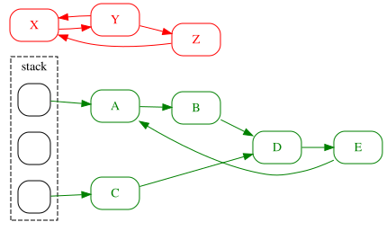
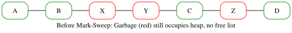
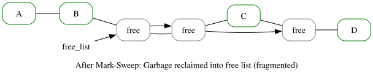
11.9.1 Mark and Sweep Advantages
No problem with cycles — reachability-based tracing handles cyclic structures correctly
Non-moving — live objects stay in place, which makes conservative GC possible (used when it is uncertain whether a value is a pointer or an integer, e.g., in C)
11.9.2 Mark and Sweep Disadvantages
Fragmentation — available space may be broken up into many small pieces; many mark-and-sweep implementations add a compaction phase (like defragmenting a disk)
Cost proportional to heap size — the sweep phase traverses the entire heap, touching dead memory in order to put it back on the free list
11.10 Copying GC
Copying GC (also called stop-and-copy) addresses the sweep-phase cost of mark and sweep by only touching live objects.
Idea: Divide the heap into two equal halves called semispaces. Only one semispace is active at a time. At GC time:
Trace the live data starting from the roots
Copy live data into the other (inactive) semispace
Declare everything remaining in the current semispace dead
Switch to the other semispace
The copying process naturally compacts the live objects, eliminating fragmentation.
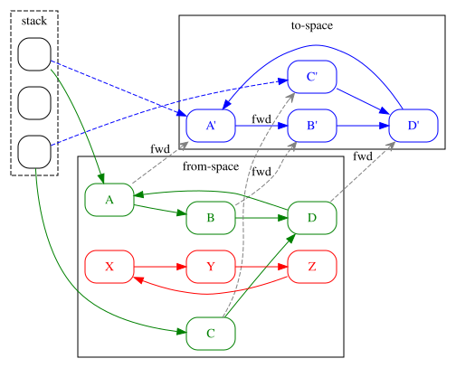
11.10.1 Copying GC Tradeoffs
Advantages:
Only touches live data — cost is proportional to the amount of live data, not heap size
No fragmentation — copying automatically compacts live objects, which tends to increase cache locality
Disadvantages:
Requires twice the memory space — only half the heap is usable at any time
11.11 Stop-the-World Pause
Both mark and sweep and copying GC "stop the world" — they prohibit program execution during the collection. This ensures that previously processed memory is not changed or accessed, avoiding inconsistency.
However, the execution pause could be unacceptably long. For example, a car’s braking system performing GC while you are trying to stop at a busy intersection would be catastrophic.
Incremental GC — collect a small portion of the heap per GC step instead of all at once
Concurrent GC — run the collector concurrently with the program, using write barriers to track changes
11.12 Generational Collection
The generational principle is an empirical observation: "Young objects die quickly; old objects keep living." Most objects are short-lived, while a small fraction survive for a long time.
Long-lived objects would be visited (and needlessly re-scanned) many times under a flat GC. The solution is to divide the heap into generations:
Older generations are collected less frequently
Objects that survive many collections are promoted into older generations
Pointers from old to young generations must be tracked (in the remembered set) to use as roots when collecting the young generation
One popular setup: generational, copying GC — use copying GC on the young generation (cheap, since most objects die young) and a different strategy for older generations.
11.12.1 Java HotSpot SDK 1.4.2 Collector
Java’s HotSpot JVM uses a multi-generational, hybrid collector:
Young generation — stop-and-copy collector
Tenured generation — mark and sweep collector
Permanent generation — no collection (stores class metadata)
11.13 Conservative Garbage Collection
For languages like C, the GC cannot be certain which elements of an object are pointers. Reasons include incomplete type information, unsafe casts, and type punning.
The conservative approach: suppose a value is a pointer if it looks like one.
Most pointers are within a certain address range and are word-aligned
If a value has pointer-like properties, treat it as a pointer
May retain memory spuriously — a value that looks like a pointer but is actually an integer could keep an object alive
Conservative collectors come in two flavors:
Mark-sweep — important that objects are not moved, since we may be wrong about what is a pointer
Mostly-copying — can move objects that we are certain are only referenced by known pointers
11.14 Comparison of GC Strategies
The three main approaches differ in several key dimensions:
Method | Handles Cycles | Fragmentation | Memory Use | Cost Basis |
Reference Counting | No | Yes | Low | Incremental |
Mark and Sweep | Yes | Yes | Medium | Heap size |
Copying GC | Yes | No | High (2×) | Live data only |
In short: reference counting is cheap per operation but cannot handle cycles; mark and sweep handles cycles but traverses the whole heap; copying GC is fast relative to live data but doubles memory usage.
11.15 Performance Tips
When working with garbage-collected runtimes, a few practices help the GC work more efficiently:
Reduce allocations — fewer live objects means less GC work; reuse objects where possible
Release references early — setting a reference to null (or reassigning it) allows the GC to reclaim the object sooner rather than waiting for the variable to go out of scope
For example, in Java:
a = null; // allows a's referent to be collected11.16 Common Memory Leak Example
Even in garbage-collected languages, memory leaks are possible when live references are unintentionally retained. A classic example is an unbounded stack implemented with an array:
public Object pop() {
return stack[index--]; // BUG: stale reference remains in array
}The popped object is no longer logically part of the stack, but stack[index+1] still holds a reference to it. The GC cannot reclaim it because the array (which is reachable) still points to the object.
The fix is to null out the slot after decrementing:
public Object pop() {
Object obj = stack[index];
stack[index--] = null; // eliminate stale reference
return obj;
}This pattern illustrates that reachability is a safe approximation of liveness — a reachable object may no longer be needed, but the GC cannot know that.
11.17 Summary
Memory management is a fundamental concern in language design and runtime implementation:
GC simplifies programming by removing the burden of manual deallocation, but adds overhead
No single GC algorithm is universally best — there are trade-offs between speed, memory usage, pause time, and correctness
Modern runtimes use hybrid approaches: generational collection with copying GC for the young generation and mark-and-sweep for older generations
Even in GC’d languages, programmers must be careful about unintentional reference retention, which can still cause memory leaks